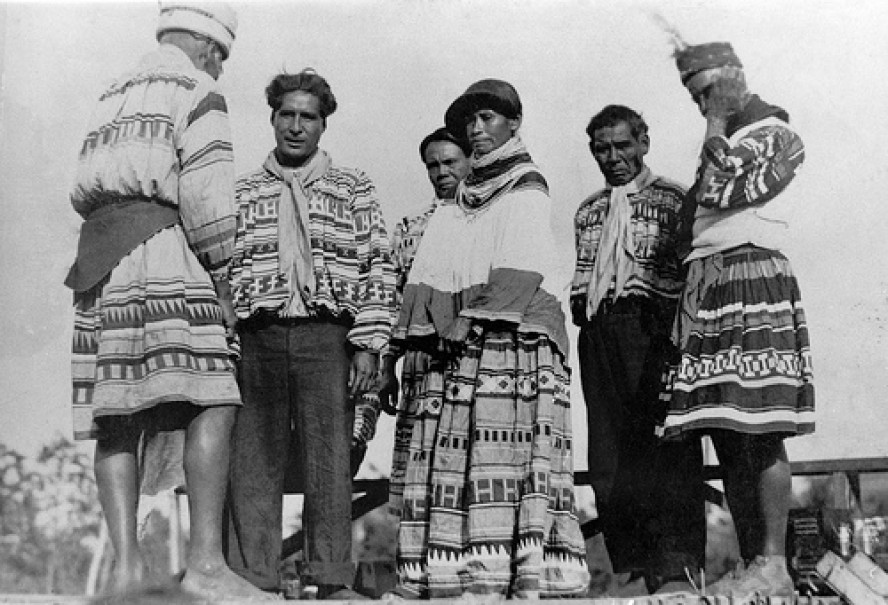

Marriage is not and should not be limited to one option. Marriage had several variations among the different Indian cultures. These societies were not build on patriarchy or monogamy. Homosexual relationships were not unheard of. Prior to exposure to European culture, there were few limits to marriage. One thing that marriage did focus on was equality, as reflected in these cultures.
